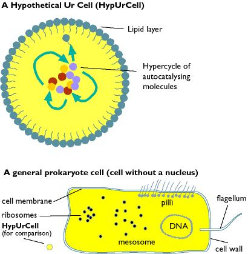
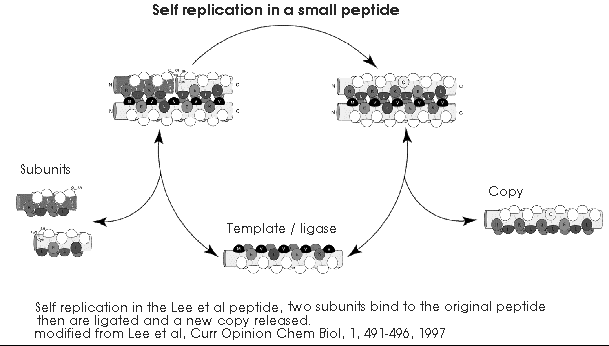
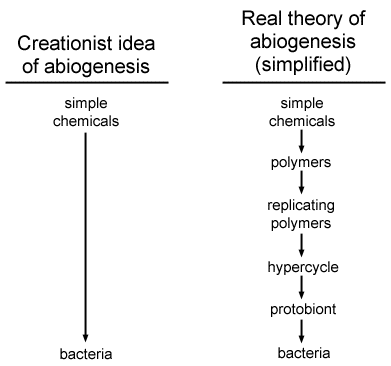

Sumário
- Introdução, o que há de errado com os cálculos dos criacionistas de que a "abiogênese é tão improvável"
- Um globo protoplasmático primordial
- O mito da "sequência da vida"
- Jogar moedas para iniciantes e montagem macromolecular
- Espaços de busca, ou quantos agulhas no palheiro?
- Conclusões
- Referências
- Links
- Agradecimentos
Introdução
De tempos em tempos, alguém formula a afirmação "a formação de qualquer enzima por acaso é quase impossível, portanto a abiogênese é impossível". Frequentemente eles citam um cálculo impressionante do astrofísico Fred Hoyle, ou invocam algo chamado "Lei de Borel" para provar que a vida é estatisticamente impossível. Essas pessoas, incluindo Fred, cometeram um ou mais dos seguintes erros.
|
Glossário
|
Problemas com os cálculos dos criacionistas de "é tão improvável"
1) Eles calculam a probabilidade da formação de uma proteína "moderna", ou mesmo de uma bactéria completa com todas as proteínas "modernas", por meio de eventos aleatórios. Isso não é a teoria da abiogênese nenhuma de forma alguma.
2) Eles assumem que existe um número fixo de proteínas, com sequências fixas para cada proteína, que são necessárias para a vida.
3) Eles calculam a probabilidade de ensaios sequenciais, em vez de ensaios simultâneos.
4) Eles mal entendem o que se entende por um cálculo de probabilidade.
5) Eles subestimam seriamente o número de enzimas/ribozimas funcionais presentes em um grupo de sequências aleatórias.
Vou tentar levar as pessoas por esses vários erros, e mostrar por que não é possível realizar um cálculo de "probabilidade de abiogênese" de qualquer maneira significativa.
Um globo protoplasmático primordial
Portanto, o cálculo mostra que a probabilidade de formar aleatoriamente uma proteína dada de 300 aminoácidos de comprimento (digamos, uma enzima como a carboxipeptidase) é (1/20)300 ou 1 em 2,04 x 10390, o que é assustadoramente, inacreditavelmente improvável. Isso é então amplificado ao somar as probabilidades de gerar cerca de 400 enzimas semelhantes, até que se atinja um número tão enorme que apenas contemplá-lo faz com que seu cérebro escorra pelas orelhas. Isso cria a impressão de que a formação de até mesmo o menor organismo parece totalmente impossível. No entanto, isso está completamente incorreto.
Primeiro, a formação de polímeros biológicos a partir de monômeros é uma função das leis da química e da bioquímica, e estas são decididamente não aleatórias.
Em segundo lugar, a premissa inteira é incorreta para começar, porque nas teorias modernas de abiogênese os primeiros "seres vivos" seriam muito mais simples, nem mesmo um protobactéria, ou um preprotobactéria (o que Oparin chamou de protobionto [8] e Woese chama de progenote [4]), mas uma ou mais moléculas simples, provavelmente não mais de 30-40 subunidades de comprimento. Essas moléculas simples então evoluíram lentamente para sistemas mais cooperativos de autorreplicação, e finalmente para organismos simples [2, 5, 10, 15, 28]. Uma ilustração comparando um protobionto hipotético e uma bactéria moderna é dada abaixo.

Os primeiros "seres vivos" poderiam ter sido uma única molécula autorreplicante, semelhante ao peptídeo "autorreplicante" do grupo de Ghadiri [7, 17], ou ao hexanucleotídeo autorreplicante [10], ou possivelmente a uma RNA polimerase que age sobre si mesma [12].

Outra visão é que os primeiros auto-replicadores foram grupos de catalisadores, seja enzimas proteicas ou ribozimas de RNA, que se regeneravam como um ciclo catalítico [3, 5, 15, 26, 28]. Um exemplo é o auto-replicador de três subunidades SunY [24]. Esses ciclos catalíticos poderiam estar limitados em um pequeno lago ou lagoa, ou ser um complexo catalítico adsorvido a argila ou material lipídico sobre argila. Dado que existem muitas sequências catalíticas em um grupo de peptídeos ou polinucleotídeos aleatórios (veja abaixo), não é improvável que um pequeno complexo catalítico possa ser formado.
Estes dois modelos não são mutuamente exclusivos. O peptídeo de Ghadiri pode sofrer mutações e formar ciclos catalíticos [9].
Independentemente de os primeiros replicadores terem sido moléculas únicas ou complexos de pequenas moléculas, este modelo não é nada parecido com o "furacão em um depósito de sucata fazendo um 747" de Hoyle. Apenas para reforçar este ponto, aqui está uma comparação simples entre a teoria criticada pelos criacionistas e a teoria real de abiogênese.

Observe que a teoria real possui uma série de pequenos passos, e de fato deixei de fora alguns deles (especialmente entre a etapa do hiper-ciclo-protobionto) por simplicidade. Cada passo está associado a um pequeno aumento na organização e complexidade, e os químicos sobem lentamente em direção à condição de organismo, em vez de dar um grande salto [4, 10, 15, 28].
De onde vem a ideia criacionista de que os organismos modernos se formam espontaneamente não está claro. A primeira formulação moderna de abiogênese, a hipótese de Oparin/Haldane dos anos 20, começa com proteínas/proteinoides simples desenvolvendo-se lentamente em células. Até mesmo as ideias que circulavam nos anos 1850 não eram teorias "espontâneas". O que mais me aproxima é a ideia original de Lamarck de 1803! [8]
Dado que os criacionistas estão criticando uma teoria com mais de 150 anos de atraso, e que não é sustentada por nenhum biólogo evolutivo moderno, por que ir além? Porque existem alguns problemas fundamentais em estatística e bioquímica que surgem nessas refutações equivocadas.
O mito da "sequência da vida"
Outra alegação frequentemente ouvida é a de que existe uma "sequência da vida" de 400 proteínas, e que as sequências de aminoácidos dessas proteínas não podem ser alteradas, para que os organismos estejam vivos.
Is, no entanto, sem sentido. A alegação de 400 proteínas parece originar-se do genoma codificador de proteínas de Mycobacterium genitalium, que possui o menor genoma atualmente conhecido de qualquer organismo moderno [20]. No entanto, a inspeção do genoma sugere que isso poderia ser reduzido ainda mais para um conjunto mínimo de genes de 256 proteínas [20]. Note novamente que este é um organismo moderno. O primeiro protobionto/progenote teria sido ainda menor [4], e precedido por sistemas químicos ainda mais simples [3, 10, 11, 15].
Quanto à alegação de que as sequências de proteínas não podem ser alteradas, novamente isso é absurdo. Na maioria das proteínas, existem regiões onde quase qualquer aminoácido pode ser substituído, e outras regiões onde substituições conservadoras (onde aminoácidos carregados podem ser trocados por outros aminoácidos carregados, neutros por outros neutros e aminoácidos hidrofóbicos por outros hidrofóbicos) podem ser feitas. Algumas moléculas funcionalmente equivalentes podem ter entre 30% e 50% de seus aminoácidos diferentes. De fato, é possível substituir proteínas bacterianas estruturalmente não idênticas por proteínas de levedura, e proteínas de verme por proteínas humanas, e os organismos vivem bastante felizes.
A "sequência da vida" é um mito.
Jogando moedas para iniciantes e montagem de macromoléculas
Então, vamos jogar o jogo criacionista e observar a formação de um peptídeo pela adição aleatória de aminoácidos. Isso certamente não é a maneira como os peptídeos se formaram na Terra primitiva, mas será instrutivo.
Vou usar como exemplo o peptídeo "auto-replicante" do grupo Ghadiri mencionado acima [7]. Poderia usar outros exemplos, como o auto-replicador hexanucleotídico [10], o auto-replicador SunY [24] ou a RNA polimerase descrita pelo grupo Eckland [12], mas para continuidade histórica com as alegações criacionistas, um pequeno peptídeo é ideal. Este peptídeo tem 32 aminoácidos de comprimento, com a sequência RMKQLEEKVYELLSKVACLEYEVARLKKVGE, e é uma enzima, uma peptidase ligase que faz uma cópia de si mesma a partir de duas subunidades de 16 aminoácidos de comprimento. Também é de um tamanho e composição que são idealmente adequados para serem formados por síntese peptídica abiótica. O fato de ser um auto-replicador é uma ironia adicional.
A probabilidade de gerar isso em tentativas aleatórias sucessivas é (1/20)32 ou 1 em 4,29 x 1040. Isso é muito, muito mais provável do que o cenário criacionista padrão de "gerar carboxipeptidase por acaso", que é de 1 em 2,04 x 10390, mas ainda parece absurdamente baixo.
Contudo, há outro lado a essas estimativas de probabilidade, e ele depende do fato de que a maioria de nós não tem uma noção de estatística. Quando alguém nos diz que um evento tem uma chance de um em um milhão de ocorrer, muitos de nós esperamos que um milhão de tentativas devam ser realizadas antes que o dito evento apareça, mas isso está errado.
Aqui está um experimento que você pode fazer: pegue uma moeda, jogue-a quatro vezes, anote os resultados e depois repita. Quantas vezes você acha que teria que repetir este procedimento (ensaio) antes de obter 4 caras seguidas?
Agora, a probabilidade de 4 caras seguidas é (1/2)4 ou 1 em 16: precisamos realizar 16 tentativas para obter 4 caras (HHHH)? Não, em experimentos sucessivos, obtive 11, 10, 6, 16, 1, 5 e 3 tentativas antes que HHHH aparecesse. O valor 1 em 16 (ou 1 em um milhão ou 1 em 1040) fornece a probabilidade de um evento em uma dada tentativa, mas não indica onde ele ocorrerá em uma série. Você pode obter HHHH na sua primeira tentativa (eu fiz). Mesmo com uma chance de 1 em 4,29 x 1040, um autorreplicador poderia ter surgido surpreendentemente cedo. Mas há mais.
Uma chance em 4,29 x 1040 continua sendo, de forma ridícula e chocante, improvável; é difícil lidar com esse número. Mesmo com o argumento acima (você poderia obtê-lo em sua primeira tentativa), a maioria das pessoas diria "certamente ainda levaria mais tempo do que a existência da Terra para criar esse replicador por métodos aleatórios". Não exatamente; nos exemplos acima, estávamos examinando tentativas sequenciais, como se apenas uma proteína/DNA/proto-replicador fosse montada por tentativa. Na verdade, haveria bilhões de tentativas simultâneas enquanto os bilhões de moléculas de blocos de construção interagiam nos oceanos ou nas milhares de quilômetros de linhas costeiras que poderiam fornecer superfícies catalíticas ou moldes [2,15].
Vamos voltar ao nosso exemplo com as moedas. Digamos que leva um minuto para lançar as moedas 4 vezes; gerar HHHH levaria em média 8 minutos. Agora, pegue 16 amigos, cada um com uma moeda, para todos lançarem a moeda simultaneamente 4 vezes; o tempo médio para gerar HHHH agora é de 1 minuto. Agora tente lançar 6 caras seguidas; isso tem uma probabilidade de (1/2)6 ou 1 em 64. Isso levaria meia hora em média, mas vá e recrute 64 pessoas, e você poderá lançá-lo em um minuto. Se você quiser lançar uma sequência com uma chance de 1 em um bilhão, basta recrutar a população da China para lançar moedas para você, e você terá essa sequência em nenhum tempo.
Portanto, se na nossa Terra pré-biótica temos um bilhão de peptídeos crescendo simultaneamente, isso reduz significativamente o tempo necessário para gerar nosso replicador.
Ok, você está olhando para esse número novamente, 1 em cada 4,29 x 1040, que é um número grande, e embora um bilhão de moléculas iniciais seja muitas moléculas, poderíamos alguma vez conseguir moléculas suficientes para montar aleatoriamente nosso primeiro replicador em menos de meio bilhão de anos?
Sim, um quilograma do aminoácido arginina contém 2,85 x 1024 moléculas (ou seja, bem mais de um bilhão de bilhões); uma tonelada de arginina contém 2,85 x 1027 moléculas. Se você pegasse uma carga de caminhão semi-reboque de cada aminoácido e despejasse em um lago de tamanho médio, teria moléculas suficientes para gerar nosso replicador específico em algumas dezenas de anos, dado que é possível produzir proteínas com 55 aminoácidos em 1 a 2 semanas [14,16].
Então, como isso se encaixa com a Terra pré-biótica? Na Terra primitiva, é provável que o oceano tivesse um volume de 1 x 1024 litros. Dada uma concentração de aminoácidos de 1 x 10-6 M (uma sopa moderadamente diluída, veja Chyba e Sagan 1992 [23]), então existem aproximadamente 1 x 1050 cadeias iniciais potenciais, de modo que um número razoável de ligases peptídicas eficientes (cerca de 1 x 1031) poderiam ser produzidas em um ano, muito menos um milhão de anos. A síntese de replicadores primitivos poderia ocorrer relativamente rapidamente, mesmo dada uma probabilidade de 1 chance em 4.29 x 1040 (e lembre-se, nosso replicador poderia ser sintetizado na primeira tentativa).
Suponha que seja necessário uma semana para gerar uma sequência [14,16]. Então, a ligase de Ghadiri poderia ser gerada em uma semana, e qualquer sequência de citocromo C poderia ser gerada em um pouco mais de um milhão de anos (juntamente com cerca de metade de todas as sequências de peptídeos 101 possíveis, uma grande proporção das quais serão proteínas funcionais de algum tipo).
Embora eu tenha usado a ligase de Ghadiri como exemplo, como mencionei acima, os mesmos cálculos podem ser realizados para o replicador auto-replicante SunY ou a RNA polimerase de Ekland. Deixo isso como um exercício para o leitor, mas a conclusão geral (você pode produzir grandes quantidades dessas coisas em pouco tempo) é a mesma para esses oligonucleotídeos.
Procurar espaços, ou quantos agulhas no palheiro?
Portanto, mostrei que gerar uma enzima pequena dada não é tão difícil quanto os criacionistas (e Fred Hoyle) sugerem. Outro mal-entendido é que a maioria das pessoas sente que o número de enzimas/ribozimas, muito menos as RNA polimerases ribozimais ou qualquer forma de autorreplicadora, representa uma configuração muito improvável e que a chance de uma única enzima/ribozima se formar, muito menos um número delas, a partir da adição aleatória de aminoácidos/nucleotídeos é muito pequena.
No entanto, uma análise de Ekland sugere que no espaço de sequências de sequências de RNA de 220 nucleotídeos, um impressionante 2,5 x 10112 sequências são ligases eficientes [12]. Não está mal para um composto anteriormente pensado como apenas estrutural. Voltando ao nosso oceano primitivo de 1 x 1024 litros e assumindo uma concentração de nucleotídeos de 1 x 10-7 M [23], então existem aproximadamente 1 x 1049 cadeias de nucleotídeos potenciais, de modo que um número razoável de ligases de RNA eficientes (cerca de 1 x 1034) poderiam ser produzidas em um ano, muito menos um milhão de anos. O número potencial de polimerases de RNA também é alto; cerca de 1 em cada 1020 sequências é uma polimerase de RNA [12]. Considerações semelhantes aplicam-se às transferases de acil ribossomais (cerca de 1 em cada 1015 sequências) e à síntese de nucleotídeos ribozimais [1, 6, 13].
Da mesma forma, dos 1 x 10130 possíveis proteínas de 100 unidades, 3,8 x 1061 representam apenas a citocromo C! [29] Há muitos enzimas funcionais no espaço de busca de peptídeos/nucleotídeos, portanto parece provável que um conjunto funcional de enzimas pudesse ser produzido na sopa pré-biótica da Terra primitiva.
Portanto, mesmo com números mais realistas (embora um pouco perturbadores para a mente), o agrupamento aleatório de aminoácidos em sistemas "suportadores de vida" (seja qual for a sua preferência: hiperciclos baseados em enzimas proteicas [10], sistemas do mundo do RNA [18], ou coevolução de ribozimas de RNA e enzimas proteicas [11, 25]) parece ser inteiramente viável, mesmo com números pessimistas para as concentrações originais de monômeros [23] e tempos de síntese.
Conclusões
A própria premissa dos cálculos de probabilidade dos criacionistas é incorreta desde o início, pois visa a teoria errada. Além disso, este argumento é frequentemente reforçado com falácias estatísticas e biológicas.
No momento, como não temos ideia de quão provável é a vida, é virtualmente impossível atribuir qualquer probabilidade significativa a qualquer um dos passos para a vida, exceto os dois primeiros (monômeros a polímeros p=1.0, formação de polímeros catalíticos p=1.0). Para a transição de polímeros replicantes a hiper-ciclo, a probabilidade pode ser 1.0 se Kauffman estiver certo sobre o fechamento catalítico e sua transição de fase modelos, mas isso requer química real e modelagem mais detalhada para confirmação. Para a transição hiper-ciclo->protobionto, a probabilidade aqui depende de conceitos teóricos ainda em desenvolvimento e é desconhecida.
Contudo, no final, a viabilidade da vida depende da química e da bioquímica que ainda estamos estudando, não de virar moedas.
Referências
[1] Unrau PJ, e Bartel DP, Síntese de nucleotídeos catalisada por RNA. Nature, 395: 260-3, 1998
[2] Orgel LE, Polimerização sobre as rochas: introdução teórica. Orig Life Evol Biosph, 28: 227-34, 1998
[3] Otsuka J e Nozawa Y. Sistema autorreplicante pode comportar-se como o demônio de Maxwell: ilustração teórica sob condições pré-bióticas. J Theor Biol, 194, 205-221, 1998
[4] Woese C, O ancestral universal. Proc Natl Acad Sci USA, 95: 6854-6859.
[5] Varetto L, Estudar a vida artificial com um autômato molecular. J Theor Biol, 193: 257-85, 1998
[6] Wiegand TW, Janssen RC, e Eaton BE, Seleção de sintases de amida de RNA. Chem Biol, 4: 675-83, 1997
[7] Severin K, Lee DH, Kennan AJ, e Ghadiri MR, Uma ligase peptídica sintética. Nature, 389: 706-9, 1997
[8] Ruse M, A origem da vida, perspectivas filosóficas. J Theor Biol, 187: 473-482, 1997
[9] Lee DH, Severin K, Yokobayashi Y, e Ghadiri MR, Emergência da simbiose na autorreplicação de peptídeos através de uma rede hipercíclica. Nature, 390: 591-4, 1997
[10] Lee DH, Severin K, e Ghadri MR. Redes autocatalíticas: a transição da autorreplicação molecular para ecossistemas moleculares. Curr Opinion Chem Biol, 1, 491-496, 1997
[11] Di Giulio M, Sobre o mundo do RNA: evidências a favor de um mundo ribonucleopéptido primitivo. J Mol Evol, 45: 571-8, 1997
[12] Ekland EH, e Bartel DP, Polimerização de RNA catalisada por RNA usando trifosfatos de nucleosídeos. Nature, 383: 192, 1996
[13] Lohse PA, e Szostak JW, Reações de transferência de aminoácidos catalisadas por ribozimas. Nature, 381: 442-4, 1996
[14] Ferris JP, Hill AR Jr, Liu R, e Orgel LE, Síntese de oligômeros pré-bióticos longos em superfícies minerais [ver comentários]. Nature, 381: 59-61, 1996
[15] Lazcano A, e Miller SL, A origem e a evolução inicial da vida: química pré-biótica, o mundo pré-RNA e o tempo. Cell, 85: 793-8, 1996
[16] Ertem G, e Ferris JP, Síntese de oligômeros de RNA em moldes heterogêneos. Nature, 379: 238-40, 1996
[17] Lee DH, Granja JR, Martinez JA, Severin K, e Ghadri MR, Um peptídeo autorreplicante. Nature, 382: 525-8, 1996
[18] Joyce GF, Construindo o mundo do RNA. Ribozimas. Curr Biol, 6: 965-7, 1996
[19] Ishizaka M, Ohshima Y, e Tani T, Isolamento de ribozimas ativas de um pool de RNA de sequências aleatórias usando um RNA substrato ancorado. Biochem Biophys Res Commun, 214: 403-9, 1995
[20] Mushegian AR e Koonin, EV, Um conjunto gênico mínimo para a vida celular derivado da comparação de genomas bacterianos completos. Proc. Natl. Acad. Sci. USA, 93: 10268-10273.
[21] Ekland EH, Szostak JW, e Bartel DP, Ligasas de RNA estruturalmente complexas e altamente ativas derivadas de sequências de RNA aleatórias. Science, 269: 364-70, 1995
[22] Breaker RR, e Joyce GF, Emergência de uma espécie replicante a partir de uma reação de evolução de RNA in vitro.Proc Natl Acad Sci U S A, 91: 6093-7, 1994
[23] Chyba C e Sagan C, Produção endógena, entrega exógena e síntese por impacto de moléculas orgânicas: um inventário para as origens da vida. Nature, 355: 125-32., 1992
[24] Doudna JA, Couture S, e Szostak JW, Um ribozima multissubunidade que é um catalisador e molde para a síntese de RNA da cadeia complementar. Science, 251: 1605-8, 1991
[25] Lahav N, Co-evolução pré-biótica da autorreplicação e da tradução ou mundo do RNA? J Theor Biol, 151: 531-9, 1991
[26] Stadler PF, Dinâmica de redes de reações autocatalíticas. IV: Redes de replicadores inhomogêneas. Biosystems, 26: 1-19, 1991
[27] Eigen M, Gardiner W, Schuster P, e Winkler-Oswatitsch R, A origem da informação genética. Sci Am, 244: 88-92, 96, et passim, 1981
[28] Eigen M, e Schuster P, O hiperciclo. Um princípio de auto-organização natural. Springer-Verlag, isbn 3-540-09293, 1979
[29] Yockey HP, Sobre o conteúdo de informação do citocromo c. J Theor Biol, 67: 345-76, 1977
Livros úteis
Estatísticas a partir do zero, T.D.V. Swinscow, 8ª Edição em brochura, Publicado pela Amer College of Physicians, 1983, ISBN: 0727901753
Evolução do Espaço, F Hoyle e Wickramasinghe, JM Dent e filhos, Londres, 1981
Poeira Vital: A Vida como um Imperativo Cósmico, de Christian De Duve, Basic Books 1995, ISBN: 0465090451
As Transições Principais na Evolução, Maynard Smith J & Szathmary E, 1995, WH Freeman, ISBN: 0716745259
As Origens da Ordem: Auto-organização e Seleção na Evolução. Por Stuart Kauffman, S. A. (1993) Oxford University Press, NY, ISBN: 0195079515.
At Home in the Universe. De Stuart Kauffman, 1995) Oxford University Press, NY.
Links
-
Coluna de Criação: Improvabilidades Evolutivas. Uma
página criacionista que utiliza o cálculo de Hoyle.
- O Testemunho
de Chandra Wickramasinghe em Arkansas, 1981. Transcrito por Brig Klyce.
-
Uma descrição do grupo Ghadiri, com comentários de
Stuart Kauffman.
-
Outras moléculas autorreplicantes
-
Um artigo da American Scientist sobre a origem da vida por
C. de Duve. Esta narrativa foi escrita antes das polimerases
ribozimais serem descritas e de uma série de outras questões
serem resolvidas, sendo, portanto, ligeiramente mais pessimista
do que deveria ser.
- Um artigo da Discover sobre o trabalho de Deamer sobre protocélulas. A partir do site da Discover, vá até os Arquivos, pesquise por novembro de 1995 e clique no link Primeira Célula.
Agradecimentos
Agradecimentos a John Wilkins e Jthomford por sugestões e discussões úteis. Agradecimentos também a John por alguns GIFs e JPEGS muito interessantes.